La Historia
Durante una patrulla de rutina en los confines del reino, los caballeros Erin y Alain son emboscados por Malakor, un temible señor de la magia oscura. En el enfrentamiento, Alain es secuestrado y arrastrado a la Fortaleza Sellada.
Despertando a las afueras de una villa vecina, Erin deberá ganarse la confianza de los aldeanos resolviendo sus problemas. A cambio de su ayuda, obtendrá bendiciones, un báculo arcano y las llaves necesarias para abrir el bastión de Malakor, rescatar a su compañero y restaurar la paz.
Galería del Mundo
Un vistazo rápido a los escenarios hiperrealistas, armamento y recompensas disponibles en esta aventura.
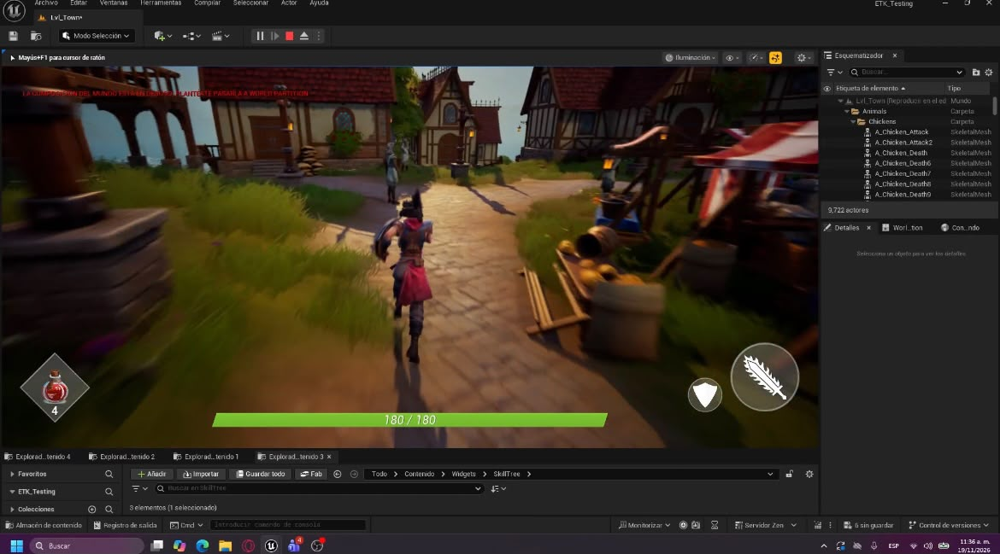
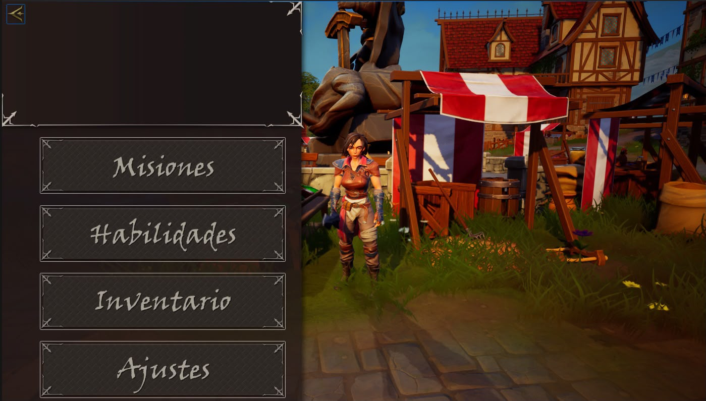
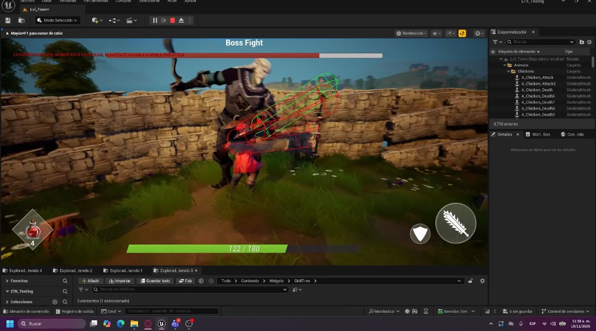
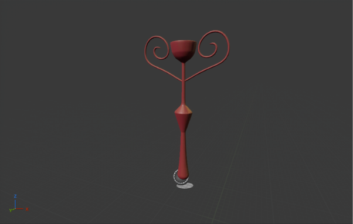
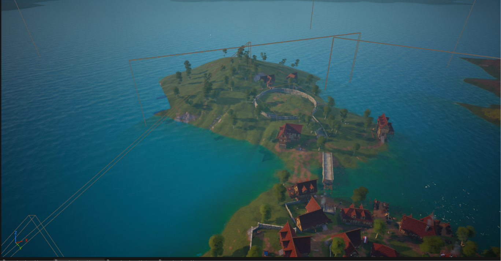
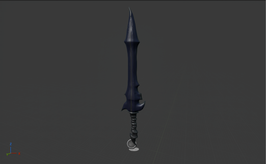
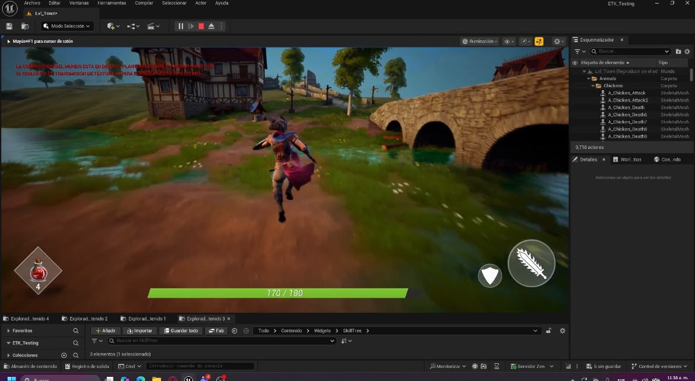
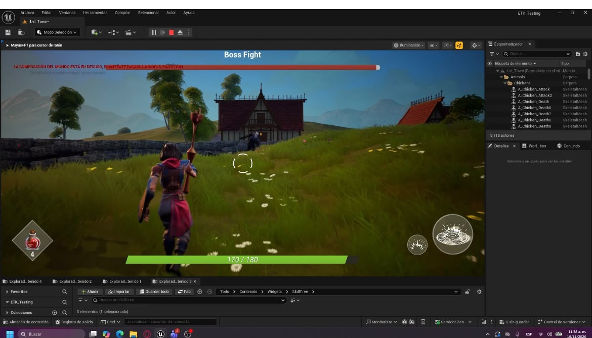
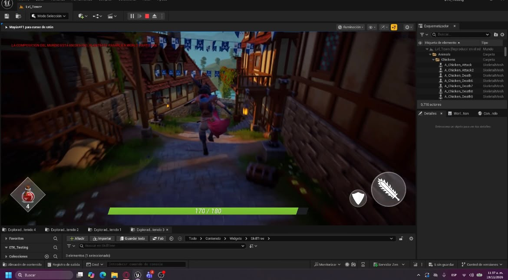
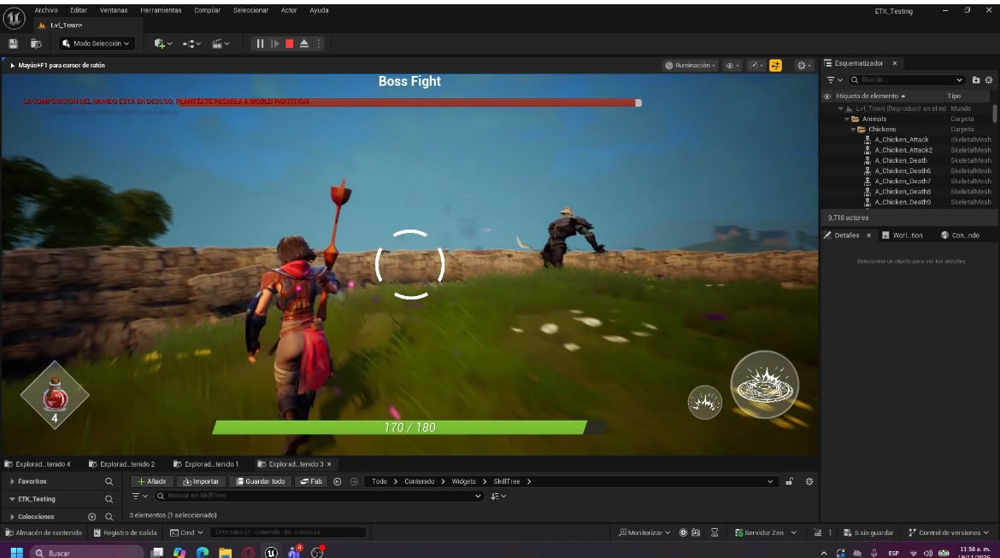
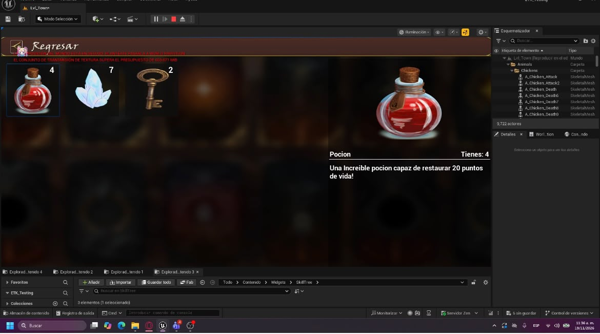
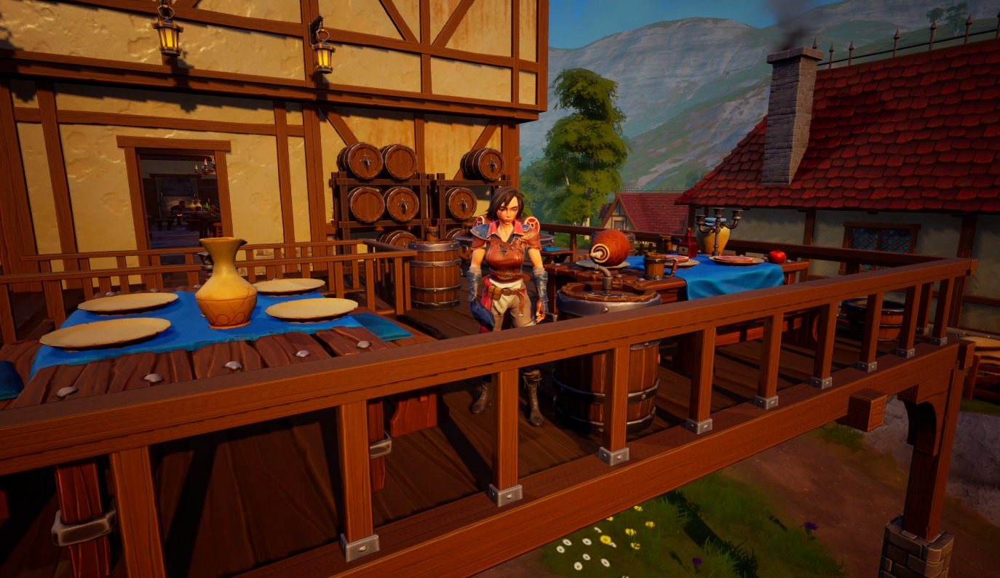
Fichas de Personajes
Conoce a los personajes de esta travesía.
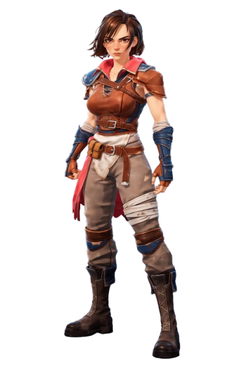
Erin
Estatura: 1.68 m
Gustos: Explorar ruinas antiguas, entrenar con la espada y ampliar su conocimiento en magia.
Personalidad: Valiente, decidida y leal. Nunca duda en dar un paso al frente para proteger a los suyos, manteniendo la calma incluso en los momentos más oscuros.
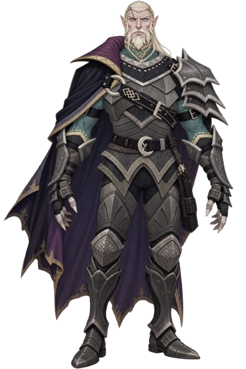
Malakor
Estatura: 1.85 m
Gustos: Los rituales de magia oscura, coleccionar reliquias y sembrar el caos en el reino.
Personalidad: Arrogante, manipulador y despiadado. Posee un intelecto brillante pero corrompido por la ambición, disfrutando poner a prueba la voluntad de quienes se atreven a enfrentarlo.
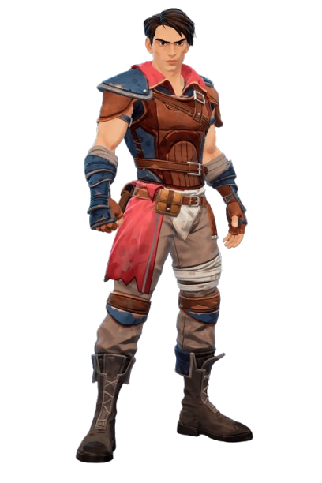
Alain
Estatura: 1.75 m
Gustos: Proteger la villa, estudiar tácticas de defensa y ayudar a los habitantes.
Personalidad: Ingenioso, analítico y un poco reservado. Es el estratega del grupo, capaz de encontrar debilidades en el enemigo con una sola mirada.
Equipo de Desarrollo
Roles: Programadores: Carlos Mendez. Jenifer Garcia | Arte Digital: Alondra Cortez